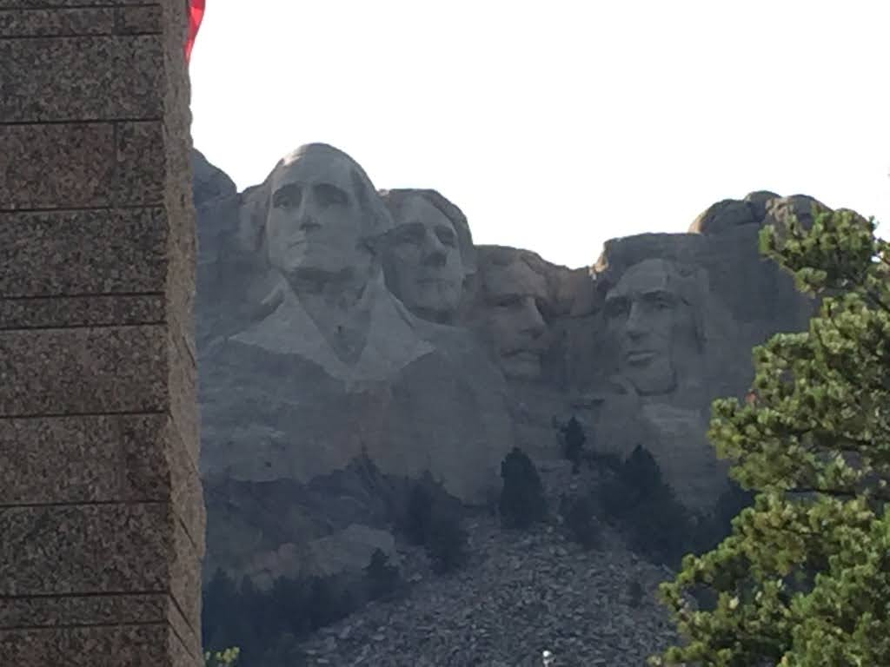
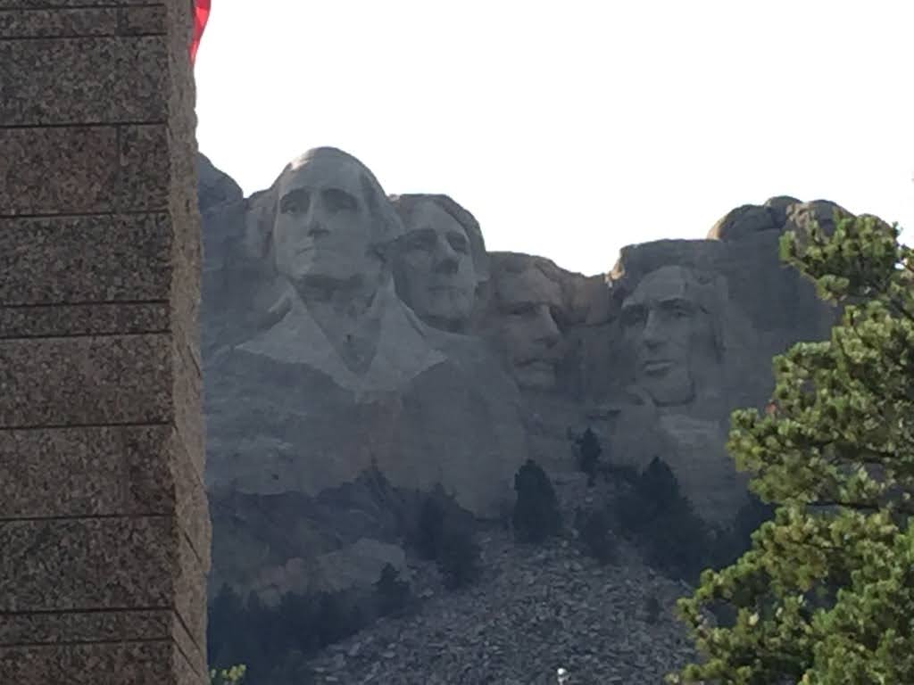

In 2016, I loaded my kids into the minivan and took them on a drive across the Northern Midwest states. We visited Wisconsin Dells, the Badlands, Mount Rushmore, Jewel Cave, and Custer State Park.


 

I hadn't planned for the overlap with the Sturgis Motorcycle rally during our trip. Many towns closed to through traffic, and the lack of internet required that we use paper maps frequently.